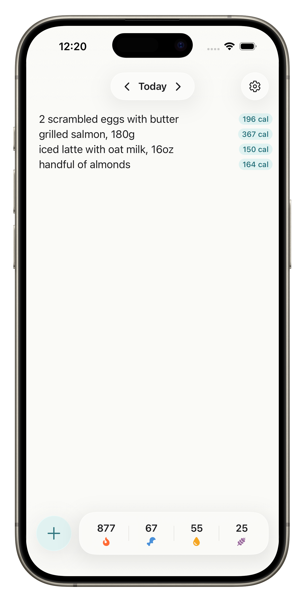
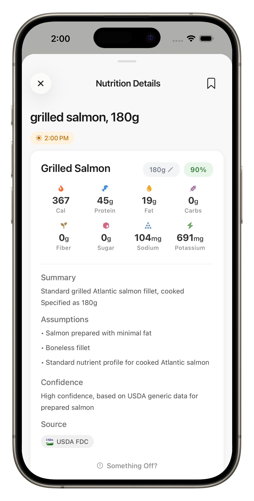
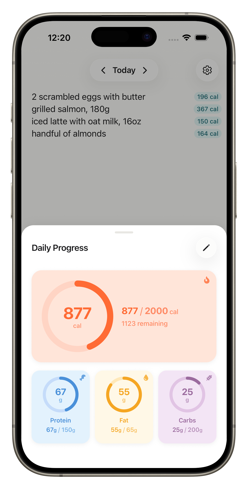
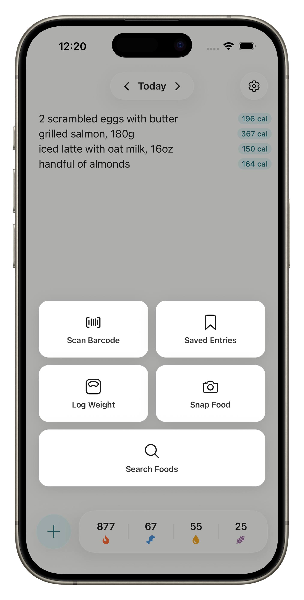

01
Type what you ate
Plain language, just like a notes app. Try
chicken breast, 150g or 2 eggs.
Write what you ate. NoteCal handles the math, macros, and goals.




Plain language, just like a notes app. Try
chicken breast, 150g or 2 eggs.
Each line is resolved against trusted nutrition databases, with confidence scores and reasoning you can review.
Personalized calorie and macro targets, weight tracking, and cross-device sync when you sign in.
Macros pull from sources dietitians trust: USDA FoodData Central for whole foods, FatSecret Platform for branded items, and the official nutrition panels chain restaurants and consumer brands publish themselves. No invented numbers, no scraped blogs.
Every estimate ships with the interpretation, assumptions, and portion notes that produced it. Tap any line to read the full trace and see exactly how the math was reached.
A 0–1 confidence score sits behind every item. Low-confidence estimates are flagged with a tilde and can be corrected with one short follow-up. No manual rebuild.
Handles brands, prep methods, and portion sizes, even when you forget the grams. Each estimate ships with reasoning, sources, and a confidence score.
A short wizard sets your daily calorie and macro targets using Mifflin–St Jeor and your activity level.
Log weight with optional notes and photos. Trend chart over 30, 60, or 90 days.
Sign in with Google or Apple to keep entries, goals, and weight history in sync. No account required to use the app.
Log anytime. Entries queue locally and resolve automatically when you're back online.
Save your go-to meals once, reuse them instantly. No extra lookup, no waiting.